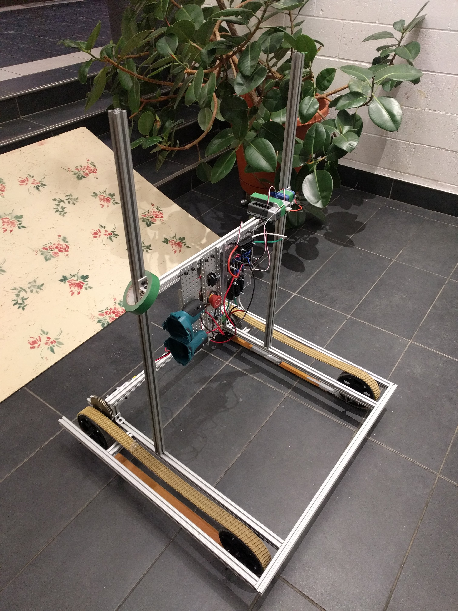

Cette année, afin de s’assurer que notre robot pourra remplir les tâches qui lui sont imposées, nous avons décidé de le construire à l’aide d’extrusions d’aluminium, ou bien T-slotted bars. Cela nous a permis d’adapter le cadre facilement et efficacement sans avoir à constamment percer des trous à travers du métal, tout en permettant à notre robot d’être plus léger, afin qu’il ne bascule pas sur la rampe.
Notre robot est composé d’une variété de choses, dont: de la magie, du ruban adhésif, des prières et un cheveu de licorne afin qu’il puisse fonctionner. Il ramassera cinq (5) balles de football et les lancera dans les cibles afin d’obtenir (on l’espère) des points.